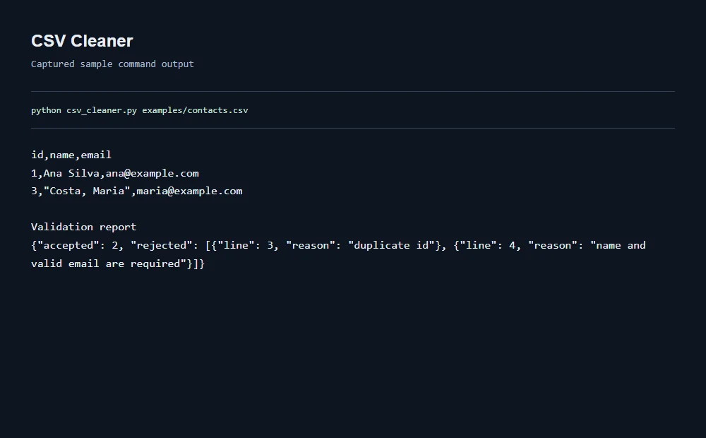

Engineering project · Runtime screenshot
CSV Cleaner
Clean UTF-8 contact rows and report duplicate IDs and invalid records.
Verified CLI example
Public source access pending.
Run the local demo
From the prepared project checkout, run these commands and open the address printed by the server. The repository may require access.
cd csv-cleaner
python csv_cleaner.py examples/contacts.csv
python -m unittest -vExample output
id,name,email
1,Ana Silva,ana@example.com
3,"Costa, Maria",maria@example.com
Validation report
{"accepted": 2, "rejected": [{"line": 3, "reason": "duplicate id"}, {"line": 4, "reason": "name and valid email are required"}]}
Problem
Small contact exports need repeatable validation and a separate rejection report.
Architecture
A Python standard-library CLI parses contact CSV, normalizes IDs and writes accepted rows to stdout and diagnostics to stderr.
Engineering decisions
- Retain the first valid row for each normalized positive ID.
- Return processing errors separately from row-level rejection results.
Implemented workflow
- Run the synthetic contacts example.
- Inspect the two accepted rows and the duplicate and invalid-email report.
Checks and evidence
The documented sample command and root-level unittest checks passed during this update.
- Executed the sample command with Python 3.13. CSV Cleaner passed two tests, File Inventory passed two tests and Log Analyzer passed one test.
Scope and next steps
- The input header is fixed to id,name,email. Email checks cover basic form.
- Rejected rows can coexist with successful processing; malformed input and unreadable files return status 2.
Technology
Python · Standard Library
Preview availability
Screenshots show the prepared local version. Hosted demos remain pending, and source access may require permission. Local setup requirements and remaining limits are documented above.
← Return to portfolio